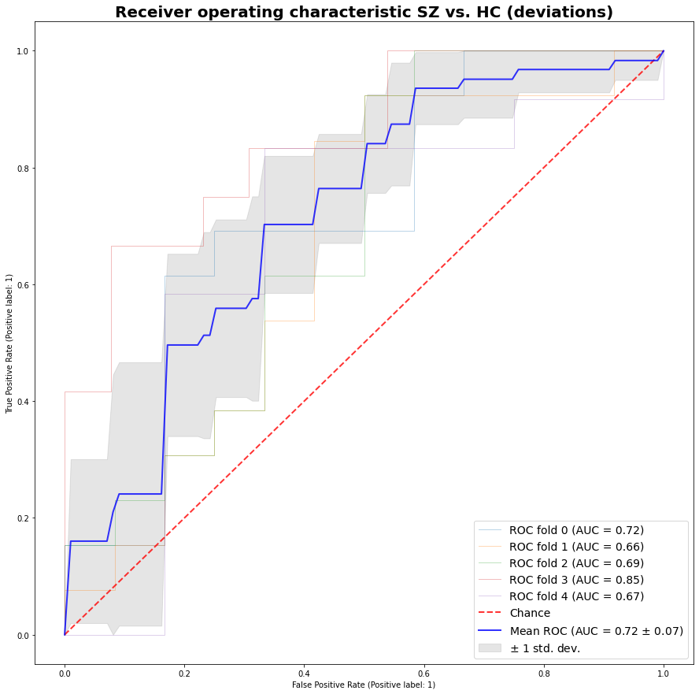
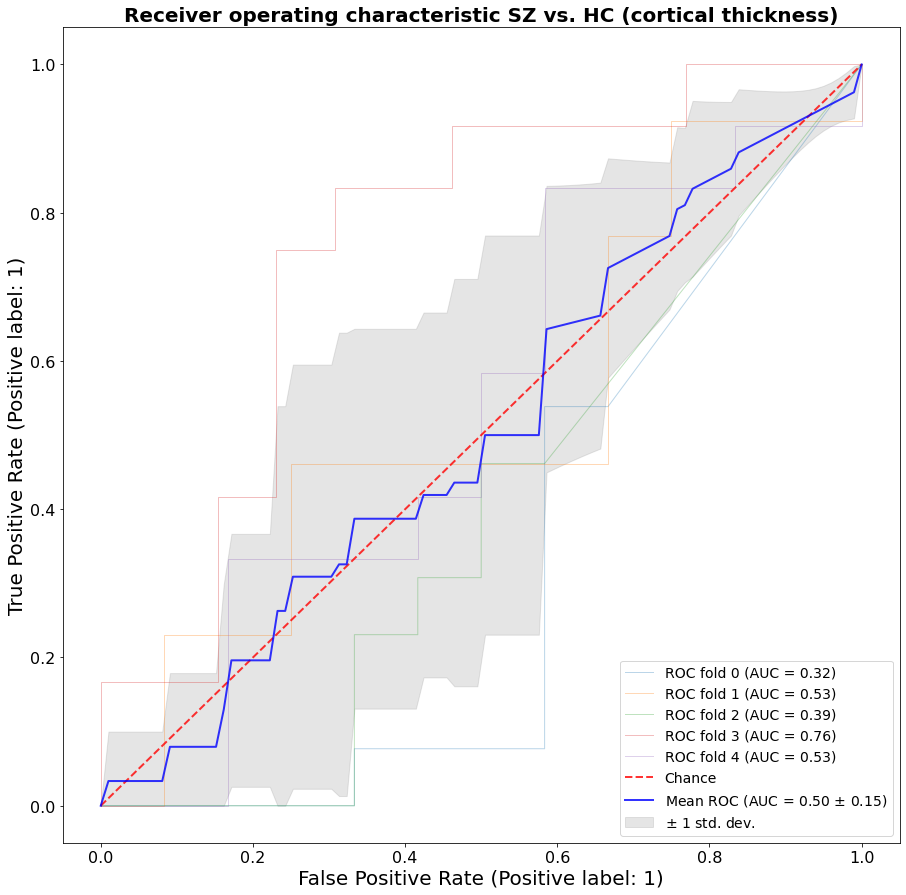

<!DOCTYPE html>
<html class="writer-html5" lang="en" >
<head>
  <meta charset="utf-8" />
  <meta name="viewport" content="width=device-width, initial-scale=1.0" />
  <title>post-hoc tutorial &mdash; Predictive Clinical Neuroscience Toolkit 0.20 documentation</title>
      <link rel="stylesheet" href="../_static/pygments.css" type="text/css" />
      <link rel="stylesheet" href="../_static/css/theme.css" type="text/css" />
      <link rel="stylesheet" href="../_static/graphviz.css" type="text/css" />
      <link rel="stylesheet" href="../_static/pages/css/pcntoolkit_tabs.css" type="text/css" />
      <link rel="stylesheet" href="../_static/tabs.css" type="text/css" />
      <link rel="stylesheet" href="../_static/pages/css/pcntoolkit.css" type="text/css" />
      <link rel="stylesheet" href="../_static/pages/css/pcntoolkit_nomaxwidth.css" type="text/css" />
  <!--[if lt IE 9]>
    <script src="../_static/js/html5shiv.min.js"></script>
  <![endif]-->
  
        <script data-url_root="../" id="documentation_options" src="../_static/documentation_options.js"></script>
        <script src="../_static/jquery.js"></script>
        <script src="../_static/underscore.js"></script>
        <script src="../_static/doctools.js"></script>
    <script src="../_static/js/theme.js"></script>
    <link rel="index" title="Index" href="../genindex.html" />
    <link rel="search" title="Search" href="../search.html" />
    <link rel="next" title="Predictive modeling using deviation scores" href="other_predictive_models.html" />
    <link rel="prev" title="Visualization of normative modeling outputs" href="visualizations.html" /> 
</head>

<body class="wy-body-for-nav"> 
  <div class="wy-grid-for-nav">
    <nav data-toggle="wy-nav-shift" class="wy-nav-side">
      <div class="wy-side-scroll">
        <div class="wy-side-nav-search" >
            <a href="../index.html">
            
          </a>
<div role="search">
  <form id="rtd-search-form" class="wy-form" action="../search.html" method="get">
    <input type="text" name="q" placeholder="Search docs" />
    <input type="hidden" name="check_keywords" value="yes" />
    <input type="hidden" name="area" value="default" />
  </form>
</div>
        </div><div class="wy-menu wy-menu-vertical" data-spy="affix" role="navigation" aria-label="Navigation menu">
              <p class="caption" role="heading"><span class="caption-text">Getting started</span></p>
<ul>
<li class="toctree-l1"><a class="reference internal" href="installation.html">Installation</a></li>
</ul>
<p class="caption" role="heading"><span class="caption-text">Background</span></p>
<ul>
<li class="toctree-l1"><a class="reference internal" href="pcntoolkit_background.html">PCNtoolkit Background</a></li>
</ul>
<p class="caption" role="heading"><span class="caption-text">Function &amp; Class Docs</span></p>
<ul>
<li class="toctree-l1"><a class="reference internal" href="../modindex.html">Module Index</a></li>
</ul>
<p class="caption" role="heading"><span class="caption-text">Tutorials</span></p>
<ul class="current">
<li class="toctree-l1"><a class="reference internal" href="normative_modelling_walkthrough.html">Gaussian Process Regression</a></li>
<li class="toctree-l1"><a class="reference internal" href="HBR_NormativeModel_FCONdata_Tutorial.html">Hierarchical Bayesian Regression</a></li>
<li class="toctree-l1"><a class="reference internal" href="apply_normative_models.html">Braincharts: transfer</a></li>
<li class="toctree-l1"><a class="reference internal" href="BLR_normativemodel_protocol.html">Bayesian Linear Regression</a></li>
<li class="toctree-l1"><a class="reference internal" href="visualizations.html">Visualization of normative modeling outputs</a></li>
<li class="toctree-l1 current"><a class="current reference internal" href="#">Post-hoc analysis on normative modeling outputs</a><ul>
<li class="toctree-l2"><a class="reference internal" href="#svm-classification">SVM classification</a><ul>
<li class="toctree-l3"><a class="reference internal" href="#svm-using-deviation-scores-as-features">SVM using deviation scores as features</a></li>
<li class="toctree-l3"><a class="reference internal" href="#svm-using-true-cortical-thickness-data-as-features">SVM using true cortical thickness data as features</a></li>
</ul>
</li>
<li class="toctree-l2"><a class="reference internal" href="#classical-case-control-testing">Classical case-control testing</a><ul>
<li class="toctree-l3"><a class="reference internal" href="#mass-univariate-two-sample-t-tests-on-deviation-score-maps">Mass univariate two sample t-tests on deviation score maps</a></li>
<li class="toctree-l3"><a class="reference internal" href="#mass-univariate-two-sample-t-tests-on-true-cortical-thickness-data">Mass univariate two sample t-tests on true cortical thickness data</a></li>
</ul>
</li>
</ul>
</li>
<li class="toctree-l1"><a class="reference internal" href="other_predictive_models.html">Predictive modeling using deviation scores</a></li>
</ul>
<p class="caption" role="heading"><span class="caption-text">Other Useful Stuff</span></p>
<ul>
<li class="toctree-l1"><a class="reference internal" href="FAQs.html">Frequently Asked Questions</a></li>
<li class="toctree-l1"><a class="reference internal" href="glossary.html">Glossary</a></li>
<li class="toctree-l1"><a class="reference internal" href="citing.html">How to cite PCNtoolkit</a></li>
<li class="toctree-l1"><a class="reference internal" href="acknowledgements.html">Acknowledgements</a></li>
</ul>

        </div>
      </div>
    </nav>

    <section data-toggle="wy-nav-shift" class="wy-nav-content-wrap"><nav class="wy-nav-top" aria-label="Mobile navigation menu" >
          <i data-toggle="wy-nav-top" class="fa fa-bars"></i>
          <a href="../index.html">Predictive Clinical Neuroscience Toolkit</a>
      </nav>

      <div class="wy-nav-content">
        <div class="rst-content">
          <div role="navigation" aria-label="Page navigation">
  <ul class="wy-breadcrumbs">
      <li><a href="../index.html" class="icon icon-home"></a> &raquo;</li>
      <li>post-hoc tutorial</li>
      <li class="wy-breadcrumbs-aside">
            <a href="../_sources/pages/post_hoc_analysis.rst.txt" rel="nofollow"> View page source</a>
      </li>
  </ul>
  <hr/>
</div>
          <div role="main" class="document" itemscope="itemscope" itemtype="http://schema.org/Article">
           <div itemprop="articleBody">
             
  <div class="section" id="post-hoc-analysis-on-normative-modeling-outputs">
<h1>Post-hoc analysis on normative modeling outputs<a class="headerlink" href="#post-hoc-analysis-on-normative-modeling-outputs" title="Permalink to this headline"></a></h1>
<p>The Normative Modeling Framework for Computational Psychiatry. Nature Protocols. <a class="reference external" href="https://doi.org/10.1101/2021.08.08.455583">https://doi.org/10.1101/2021.08.08.455583</a>.</p>
<p>Created by <a class="reference external" href="https://twitter.com/being_saige">Saige Rutherford</a></p>
<a class="reference external image-reference" href="https://colab.research.google.com/github/predictive-clinical-neuroscience/PCNtoolkit-demo/blob/main/tutorials/BLR_protocol/post_hoc_analysis.ipynb"></a>
<div class="section" id="svm-classification">
<h2>SVM classification<a class="headerlink" href="#svm-classification" title="Permalink to this headline"></a></h2>
<p>Classify schizophrenia group from controls using cortical thickness
deviation scores (z-scores) and then the true cortical thickness data to
see which type of data better separates the groups.</p>
<div class="highlight-ipython3 notranslate"><div class="highlight"><pre><span></span><span class="o">!</span> git clone https://github.com/predictive-clinical-neuroscience/PCNtoolkit-demo.git
</pre></div>
</div>
<div class="highlight-none notranslate"><div class="highlight"><pre><span></span>Cloning into &#39;PCNtoolkit-demo&#39;...
remote: Enumerating objects: 855, done.
remote: Counting objects: 100% (855/855), done.
remote: Compressing objects: 100% (737/737), done.
remote: Total 855 (delta 278), reused 601 (delta 101), pack-reused 0
Receiving objects: 100% (855/855), 18.07 MiB | 16.65 MiB/s, done.
Resolving deltas: 100% (278/278), done.
</pre></div>
</div>
<div class="highlight-ipython3 notranslate"><div class="highlight"><pre><span></span><span class="kn">import</span> <span class="nn">pandas</span> <span class="k">as</span> <span class="nn">pd</span>
<span class="kn">import</span> <span class="nn">numpy</span> <span class="k">as</span> <span class="nn">np</span>
<span class="kn">import</span> <span class="nn">os</span>
<span class="kn">import</span> <span class="nn">matplotlib.pyplot</span> <span class="k">as</span> <span class="nn">plt</span>
<span class="n">os</span><span class="o">.</span><span class="n">chdir</span><span class="p">(</span><span class="s1">&#39;/content/PCNtoolkit-demo/&#39;</span><span class="p">)</span>
</pre></div>
</div>
<div class="highlight-ipython3 notranslate"><div class="highlight"><pre><span></span><span class="n">Z_df</span> <span class="o">=</span> <span class="n">pd</span><span class="o">.</span><span class="n">read_csv</span><span class="p">(</span><span class="s1">&#39;data/fcon1000_te_Z.csv&#39;</span><span class="p">)</span>
</pre></div>
</div>
<div class="highlight-ipython3 notranslate"><div class="highlight"><pre><span></span><span class="kn">from</span> <span class="nn">sklearn</span> <span class="kn">import</span> <span class="n">svm</span>
<span class="kn">from</span> <span class="nn">sklearn.metrics</span> <span class="kn">import</span> <span class="n">auc</span>
<span class="kn">from</span> <span class="nn">sklearn.metrics</span> <span class="kn">import</span> <span class="n">plot_roc_curve</span>
<span class="kn">from</span> <span class="nn">sklearn.model_selection</span> <span class="kn">import</span> <span class="n">StratifiedKFold</span>
</pre></div>
</div>
<div class="highlight-ipython3 notranslate"><div class="highlight"><pre><span></span><span class="n">Z_df</span><span class="o">.</span><span class="n">dropna</span><span class="p">(</span><span class="n">subset</span><span class="o">=</span><span class="p">[</span><span class="s1">&#39;group&#39;</span><span class="p">],</span> <span class="n">inplace</span><span class="o">=</span><span class="kc">True</span><span class="p">)</span>
</pre></div>
</div>
<div class="highlight-ipython3 notranslate"><div class="highlight"><pre><span></span><span class="n">Z_df</span><span class="p">[</span><span class="s1">&#39;group&#39;</span><span class="p">]</span> <span class="o">=</span> <span class="n">Z_df</span><span class="p">[</span><span class="s1">&#39;group&#39;</span><span class="p">]</span><span class="o">.</span><span class="n">replace</span><span class="p">(</span><span class="s2">&quot;SZ&quot;</span><span class="p">,</span><span class="mi">0</span><span class="p">)</span>
</pre></div>
</div>
<div class="highlight-ipython3 notranslate"><div class="highlight"><pre><span></span><span class="n">Z_df</span><span class="p">[</span><span class="s1">&#39;group&#39;</span><span class="p">]</span> <span class="o">=</span> <span class="n">Z_df</span><span class="p">[</span><span class="s1">&#39;group&#39;</span><span class="p">]</span><span class="o">.</span><span class="n">replace</span><span class="p">(</span><span class="s2">&quot;Control&quot;</span><span class="p">,</span><span class="mi">1</span><span class="p">)</span>
</pre></div>
</div>
<div class="highlight-ipython3 notranslate"><div class="highlight"><pre><span></span><span class="n">deviations</span> <span class="o">=</span> <span class="n">Z_df</span><span class="o">.</span><span class="n">loc</span><span class="p">[:,</span> <span class="n">Z_df</span><span class="o">.</span><span class="n">columns</span><span class="o">.</span><span class="n">str</span><span class="o">.</span><span class="n">contains</span><span class="p">(</span><span class="s1">&#39;Z_predict&#39;</span><span class="p">)]</span>
</pre></div>
</div>
<div class="highlight-ipython3 notranslate"><div class="highlight"><pre><span></span><span class="n">cortical_thickness</span> <span class="o">=</span> <span class="n">Z_df</span><span class="o">.</span><span class="n">loc</span><span class="p">[:,</span> <span class="n">Z_df</span><span class="o">.</span><span class="n">columns</span><span class="o">.</span><span class="n">str</span><span class="o">.</span><span class="n">endswith</span><span class="p">(</span><span class="s1">&#39;_thickness&#39;</span><span class="p">)]</span>
</pre></div>
</div>
<div class="highlight-ipython3 notranslate"><div class="highlight"><pre><span></span><span class="c1"># Data IO and generation</span>
<span class="n">X1</span> <span class="o">=</span> <span class="n">deviations</span>
<span class="n">X2</span> <span class="o">=</span> <span class="n">cortical_thickness</span>
<span class="n">y</span> <span class="o">=</span> <span class="n">Z_df</span><span class="p">[</span><span class="s1">&#39;group&#39;</span><span class="p">]</span>
<span class="n">n_samples</span><span class="p">,</span> <span class="n">n_features</span> <span class="o">=</span> <span class="n">X1</span><span class="o">.</span><span class="n">shape</span>
<span class="n">random_state</span> <span class="o">=</span> <span class="n">np</span><span class="o">.</span><span class="n">random</span><span class="o">.</span><span class="n">RandomState</span><span class="p">(</span><span class="mi">0</span><span class="p">)</span>
</pre></div>
</div>
<div class="highlight-ipython3 notranslate"><div class="highlight"><pre><span></span><span class="n">X1</span> <span class="o">=</span> <span class="n">X1</span><span class="o">.</span><span class="n">to_numpy</span><span class="p">()</span>
</pre></div>
</div>
<div class="highlight-ipython3 notranslate"><div class="highlight"><pre><span></span><span class="n">X2</span> <span class="o">=</span> <span class="n">X2</span><span class="o">.</span><span class="n">to_numpy</span><span class="p">()</span>
</pre></div>
</div>
<div class="highlight-ipython3 notranslate"><div class="highlight"><pre><span></span><span class="n">y</span> <span class="o">=</span> <span class="n">y</span><span class="o">.</span><span class="n">astype</span><span class="p">(</span><span class="nb">int</span><span class="p">)</span>
</pre></div>
</div>
<div class="highlight-ipython3 notranslate"><div class="highlight"><pre><span></span><span class="n">y</span> <span class="o">=</span> <span class="n">y</span><span class="o">.</span><span class="n">to_numpy</span><span class="p">()</span>
</pre></div>
</div>
<div class="section" id="svm-using-deviation-scores-as-features">
<h3>SVM using deviation scores as features<a class="headerlink" href="#svm-using-deviation-scores-as-features" title="Permalink to this headline"></a></h3>
<div class="highlight-ipython3 notranslate"><div class="highlight"><pre><span></span><span class="c1"># Run classifier with cross-validation and plot ROC curves</span>
<span class="n">cv</span> <span class="o">=</span> <span class="n">StratifiedKFold</span><span class="p">(</span><span class="n">n_splits</span><span class="o">=</span><span class="mi">5</span><span class="p">)</span>
<span class="n">classifier</span> <span class="o">=</span> <span class="n">svm</span><span class="o">.</span><span class="n">SVC</span><span class="p">(</span><span class="n">kernel</span><span class="o">=</span><span class="s1">&#39;linear&#39;</span><span class="p">,</span> <span class="n">probability</span><span class="o">=</span><span class="kc">True</span><span class="p">,</span>
                     <span class="n">random_state</span><span class="o">=</span><span class="n">random_state</span><span class="p">)</span>

<span class="n">tprs</span> <span class="o">=</span> <span class="p">[]</span>
<span class="n">aucs</span> <span class="o">=</span> <span class="p">[]</span>
<span class="n">mean_fpr</span> <span class="o">=</span> <span class="n">np</span><span class="o">.</span><span class="n">linspace</span><span class="p">(</span><span class="mi">0</span><span class="p">,</span> <span class="mi">1</span><span class="p">,</span> <span class="mi">100</span><span class="p">)</span>

<span class="n">fig</span><span class="p">,</span> <span class="n">ax</span> <span class="o">=</span> <span class="n">plt</span><span class="o">.</span><span class="n">subplots</span><span class="p">(</span><span class="n">figsize</span><span class="o">=</span><span class="p">(</span><span class="mi">15</span><span class="p">,</span><span class="mi">15</span><span class="p">))</span>
<span class="n">parameters</span> <span class="o">=</span> <span class="p">{</span><span class="s1">&#39;axes.labelsize&#39;</span><span class="p">:</span> <span class="mi">20</span><span class="p">,</span>
          <span class="s1">&#39;axes.titlesize&#39;</span><span class="p">:</span> <span class="mi">25</span><span class="p">,</span> <span class="s1">&#39;xtick.labelsize&#39;</span><span class="p">:</span><span class="mi">16</span><span class="p">,</span><span class="s1">&#39;ytick.labelsize&#39;</span><span class="p">:</span><span class="mi">16</span><span class="p">,</span><span class="s1">&#39;legend.fontsize&#39;</span><span class="p">:</span><span class="mi">14</span><span class="p">,</span><span class="s1">&#39;legend.title_fontsize&#39;</span><span class="p">:</span><span class="mi">16</span><span class="p">}</span>
<span class="n">plt</span><span class="o">.</span><span class="n">rcParams</span><span class="o">.</span><span class="n">update</span><span class="p">(</span><span class="n">parameters</span><span class="p">)</span>

<span class="k">for</span> <span class="n">i</span><span class="p">,</span> <span class="p">(</span><span class="n">train</span><span class="p">,</span> <span class="n">test</span><span class="p">)</span> <span class="ow">in</span> <span class="nb">enumerate</span><span class="p">(</span><span class="n">cv</span><span class="o">.</span><span class="n">split</span><span class="p">(</span><span class="n">X1</span><span class="p">,</span> <span class="n">y</span><span class="p">)):</span>
    <span class="n">classifier</span><span class="o">.</span><span class="n">fit</span><span class="p">(</span><span class="n">X1</span><span class="p">[</span><span class="n">train</span><span class="p">],</span> <span class="n">y</span><span class="p">[</span><span class="n">train</span><span class="p">])</span>
    <span class="n">viz</span> <span class="o">=</span> <span class="n">plot_roc_curve</span><span class="p">(</span><span class="n">classifier</span><span class="p">,</span> <span class="n">X1</span><span class="p">[</span><span class="n">test</span><span class="p">],</span> <span class="n">y</span><span class="p">[</span><span class="n">test</span><span class="p">],</span>
                         <span class="n">name</span><span class="o">=</span><span class="s1">&#39;ROC fold </span><span class="si">{}</span><span class="s1">&#39;</span><span class="o">.</span><span class="n">format</span><span class="p">(</span><span class="n">i</span><span class="p">),</span>
                         <span class="n">alpha</span><span class="o">=</span><span class="mf">0.3</span><span class="p">,</span> <span class="n">lw</span><span class="o">=</span><span class="mi">1</span><span class="p">,</span> <span class="n">ax</span><span class="o">=</span><span class="n">ax</span><span class="p">)</span>
    <span class="n">interp_tpr</span> <span class="o">=</span> <span class="n">np</span><span class="o">.</span><span class="n">interp</span><span class="p">(</span><span class="n">mean_fpr</span><span class="p">,</span> <span class="n">viz</span><span class="o">.</span><span class="n">fpr</span><span class="p">,</span> <span class="n">viz</span><span class="o">.</span><span class="n">tpr</span><span class="p">)</span>
    <span class="n">interp_tpr</span><span class="p">[</span><span class="mi">0</span><span class="p">]</span> <span class="o">=</span> <span class="mf">0.0</span>
    <span class="n">tprs</span><span class="o">.</span><span class="n">append</span><span class="p">(</span><span class="n">interp_tpr</span><span class="p">)</span>
    <span class="n">aucs</span><span class="o">.</span><span class="n">append</span><span class="p">(</span><span class="n">viz</span><span class="o">.</span><span class="n">roc_auc</span><span class="p">)</span>

<span class="n">ax</span><span class="o">.</span><span class="n">plot</span><span class="p">([</span><span class="mi">0</span><span class="p">,</span> <span class="mi">1</span><span class="p">],</span> <span class="p">[</span><span class="mi">0</span><span class="p">,</span> <span class="mi">1</span><span class="p">],</span> <span class="n">linestyle</span><span class="o">=</span><span class="s1">&#39;--&#39;</span><span class="p">,</span> <span class="n">lw</span><span class="o">=</span><span class="mi">2</span><span class="p">,</span> <span class="n">color</span><span class="o">=</span><span class="s1">&#39;r&#39;</span><span class="p">,</span>
        <span class="n">label</span><span class="o">=</span><span class="s1">&#39;Chance&#39;</span><span class="p">,</span> <span class="n">alpha</span><span class="o">=</span><span class="mf">.8</span><span class="p">)</span>

<span class="n">mean_tpr</span> <span class="o">=</span> <span class="n">np</span><span class="o">.</span><span class="n">mean</span><span class="p">(</span><span class="n">tprs</span><span class="p">,</span> <span class="n">axis</span><span class="o">=</span><span class="mi">0</span><span class="p">)</span>
<span class="n">mean_tpr</span><span class="p">[</span><span class="o">-</span><span class="mi">1</span><span class="p">]</span> <span class="o">=</span> <span class="mf">1.0</span>
<span class="n">mean_auc</span> <span class="o">=</span> <span class="n">auc</span><span class="p">(</span><span class="n">mean_fpr</span><span class="p">,</span> <span class="n">mean_tpr</span><span class="p">)</span>
<span class="n">std_auc</span> <span class="o">=</span> <span class="n">np</span><span class="o">.</span><span class="n">std</span><span class="p">(</span><span class="n">aucs</span><span class="p">)</span>
<span class="n">ax</span><span class="o">.</span><span class="n">plot</span><span class="p">(</span><span class="n">mean_fpr</span><span class="p">,</span> <span class="n">mean_tpr</span><span class="p">,</span> <span class="n">color</span><span class="o">=</span><span class="s1">&#39;b&#39;</span><span class="p">,</span>
        <span class="n">label</span><span class="o">=</span><span class="sa">r</span><span class="s1">&#39;Mean ROC (AUC = </span><span class="si">%0.2f</span><span class="s1"> $\pm$ </span><span class="si">%0.2f</span><span class="s1">)&#39;</span> <span class="o">%</span> <span class="p">(</span><span class="n">mean_auc</span><span class="p">,</span> <span class="n">std_auc</span><span class="p">),</span>
        <span class="n">lw</span><span class="o">=</span><span class="mi">2</span><span class="p">,</span> <span class="n">alpha</span><span class="o">=</span><span class="mf">.8</span><span class="p">)</span>

<span class="n">std_tpr</span> <span class="o">=</span> <span class="n">np</span><span class="o">.</span><span class="n">std</span><span class="p">(</span><span class="n">tprs</span><span class="p">,</span> <span class="n">axis</span><span class="o">=</span><span class="mi">0</span><span class="p">)</span>
<span class="n">tprs_upper</span> <span class="o">=</span> <span class="n">np</span><span class="o">.</span><span class="n">minimum</span><span class="p">(</span><span class="n">mean_tpr</span> <span class="o">+</span> <span class="n">std_tpr</span><span class="p">,</span> <span class="mi">1</span><span class="p">)</span>
<span class="n">tprs_lower</span> <span class="o">=</span> <span class="n">np</span><span class="o">.</span><span class="n">maximum</span><span class="p">(</span><span class="n">mean_tpr</span> <span class="o">-</span> <span class="n">std_tpr</span><span class="p">,</span> <span class="mi">0</span><span class="p">)</span>
<span class="n">ax</span><span class="o">.</span><span class="n">fill_between</span><span class="p">(</span><span class="n">mean_fpr</span><span class="p">,</span> <span class="n">tprs_lower</span><span class="p">,</span> <span class="n">tprs_upper</span><span class="p">,</span> <span class="n">color</span><span class="o">=</span><span class="s1">&#39;grey&#39;</span><span class="p">,</span> <span class="n">alpha</span><span class="o">=</span><span class="mf">.2</span><span class="p">,</span>
                <span class="n">label</span><span class="o">=</span><span class="sa">r</span><span class="s1">&#39;$\pm$ 1 std. dev.&#39;</span><span class="p">)</span>

<span class="n">ax</span><span class="o">.</span><span class="n">set</span><span class="p">(</span><span class="n">xlim</span><span class="o">=</span><span class="p">[</span><span class="o">-</span><span class="mf">0.05</span><span class="p">,</span> <span class="mf">1.05</span><span class="p">],</span> <span class="n">ylim</span><span class="o">=</span><span class="p">[</span><span class="o">-</span><span class="mf">0.05</span><span class="p">,</span> <span class="mf">1.05</span><span class="p">])</span>
<span class="n">ax</span><span class="o">.</span><span class="n">set_title</span><span class="p">(</span><span class="s1">&#39;Receiver operating characteristic SZ vs. HC (deviations)&#39;</span><span class="p">,</span> <span class="n">fontweight</span><span class="o">=</span><span class="s2">&quot;bold&quot;</span><span class="p">,</span> <span class="n">size</span><span class="o">=</span><span class="mi">20</span><span class="p">)</span>
<span class="n">ax</span><span class="o">.</span><span class="n">legend</span><span class="p">(</span><span class="n">loc</span><span class="o">=</span><span class="s2">&quot;lower right&quot;</span><span class="p">)</span>
<span class="n">plt</span><span class="o">.</span><span class="n">show</span><span class="p">()</span>
</pre></div>
</div>

</div>
<div class="section" id="svm-using-true-cortical-thickness-data-as-features">
<h3>SVM using true cortical thickness data as features<a class="headerlink" href="#svm-using-true-cortical-thickness-data-as-features" title="Permalink to this headline"></a></h3>
<div class="highlight-ipython3 notranslate"><div class="highlight"><pre><span></span><span class="c1"># Run classifier with cross-validation and plot ROC curves</span>
<span class="n">cv</span> <span class="o">=</span> <span class="n">StratifiedKFold</span><span class="p">(</span><span class="n">n_splits</span><span class="o">=</span><span class="mi">5</span><span class="p">)</span>
<span class="n">classifier</span> <span class="o">=</span> <span class="n">svm</span><span class="o">.</span><span class="n">SVC</span><span class="p">(</span><span class="n">kernel</span><span class="o">=</span><span class="s1">&#39;linear&#39;</span><span class="p">,</span> <span class="n">probability</span><span class="o">=</span><span class="kc">True</span><span class="p">,</span>
                     <span class="n">random_state</span><span class="o">=</span><span class="n">random_state</span><span class="p">)</span>

<span class="n">tprs</span> <span class="o">=</span> <span class="p">[]</span>
<span class="n">aucs</span> <span class="o">=</span> <span class="p">[]</span>
<span class="n">mean_fpr</span> <span class="o">=</span> <span class="n">np</span><span class="o">.</span><span class="n">linspace</span><span class="p">(</span><span class="mi">0</span><span class="p">,</span> <span class="mi">1</span><span class="p">,</span> <span class="mi">100</span><span class="p">)</span>

<span class="n">fig</span><span class="p">,</span> <span class="n">ax</span> <span class="o">=</span> <span class="n">plt</span><span class="o">.</span><span class="n">subplots</span><span class="p">(</span><span class="n">figsize</span><span class="o">=</span><span class="p">(</span><span class="mi">15</span><span class="p">,</span><span class="mi">15</span><span class="p">))</span>
<span class="n">parameters</span> <span class="o">=</span> <span class="p">{</span><span class="s1">&#39;axes.labelsize&#39;</span><span class="p">:</span> <span class="mi">20</span><span class="p">,</span>
          <span class="s1">&#39;axes.titlesize&#39;</span><span class="p">:</span> <span class="mi">25</span><span class="p">,</span> <span class="s1">&#39;xtick.labelsize&#39;</span><span class="p">:</span><span class="mi">16</span><span class="p">,</span><span class="s1">&#39;ytick.labelsize&#39;</span><span class="p">:</span><span class="mi">16</span><span class="p">,</span><span class="s1">&#39;legend.fontsize&#39;</span><span class="p">:</span><span class="mi">14</span><span class="p">,</span><span class="s1">&#39;legend.title_fontsize&#39;</span><span class="p">:</span><span class="mi">16</span><span class="p">}</span>
<span class="n">plt</span><span class="o">.</span><span class="n">rcParams</span><span class="o">.</span><span class="n">update</span><span class="p">(</span><span class="n">parameters</span><span class="p">)</span>

<span class="k">for</span> <span class="n">i</span><span class="p">,</span> <span class="p">(</span><span class="n">train</span><span class="p">,</span> <span class="n">test</span><span class="p">)</span> <span class="ow">in</span> <span class="nb">enumerate</span><span class="p">(</span><span class="n">cv</span><span class="o">.</span><span class="n">split</span><span class="p">(</span><span class="n">X2</span><span class="p">,</span> <span class="n">y</span><span class="p">)):</span>
    <span class="n">classifier</span><span class="o">.</span><span class="n">fit</span><span class="p">(</span><span class="n">X2</span><span class="p">[</span><span class="n">train</span><span class="p">],</span> <span class="n">y</span><span class="p">[</span><span class="n">train</span><span class="p">])</span>
    <span class="n">viz</span> <span class="o">=</span> <span class="n">plot_roc_curve</span><span class="p">(</span><span class="n">classifier</span><span class="p">,</span> <span class="n">X2</span><span class="p">[</span><span class="n">test</span><span class="p">],</span> <span class="n">y</span><span class="p">[</span><span class="n">test</span><span class="p">],</span>
                         <span class="n">name</span><span class="o">=</span><span class="s1">&#39;ROC fold </span><span class="si">{}</span><span class="s1">&#39;</span><span class="o">.</span><span class="n">format</span><span class="p">(</span><span class="n">i</span><span class="p">),</span>
                         <span class="n">alpha</span><span class="o">=</span><span class="mf">0.3</span><span class="p">,</span> <span class="n">lw</span><span class="o">=</span><span class="mi">1</span><span class="p">,</span> <span class="n">ax</span><span class="o">=</span><span class="n">ax</span><span class="p">)</span>
    <span class="n">interp_tpr</span> <span class="o">=</span> <span class="n">np</span><span class="o">.</span><span class="n">interp</span><span class="p">(</span><span class="n">mean_fpr</span><span class="p">,</span> <span class="n">viz</span><span class="o">.</span><span class="n">fpr</span><span class="p">,</span> <span class="n">viz</span><span class="o">.</span><span class="n">tpr</span><span class="p">)</span>
    <span class="n">interp_tpr</span><span class="p">[</span><span class="mi">0</span><span class="p">]</span> <span class="o">=</span> <span class="mf">0.0</span>
    <span class="n">tprs</span><span class="o">.</span><span class="n">append</span><span class="p">(</span><span class="n">interp_tpr</span><span class="p">)</span>
    <span class="n">aucs</span><span class="o">.</span><span class="n">append</span><span class="p">(</span><span class="n">viz</span><span class="o">.</span><span class="n">roc_auc</span><span class="p">)</span>

<span class="n">ax</span><span class="o">.</span><span class="n">plot</span><span class="p">([</span><span class="mi">0</span><span class="p">,</span> <span class="mi">1</span><span class="p">],</span> <span class="p">[</span><span class="mi">0</span><span class="p">,</span> <span class="mi">1</span><span class="p">],</span> <span class="n">linestyle</span><span class="o">=</span><span class="s1">&#39;--&#39;</span><span class="p">,</span> <span class="n">lw</span><span class="o">=</span><span class="mi">2</span><span class="p">,</span> <span class="n">color</span><span class="o">=</span><span class="s1">&#39;r&#39;</span><span class="p">,</span>
        <span class="n">label</span><span class="o">=</span><span class="s1">&#39;Chance&#39;</span><span class="p">,</span> <span class="n">alpha</span><span class="o">=</span><span class="mf">.8</span><span class="p">)</span>

<span class="n">mean_tpr</span> <span class="o">=</span> <span class="n">np</span><span class="o">.</span><span class="n">mean</span><span class="p">(</span><span class="n">tprs</span><span class="p">,</span> <span class="n">axis</span><span class="o">=</span><span class="mi">0</span><span class="p">)</span>
<span class="n">mean_tpr</span><span class="p">[</span><span class="o">-</span><span class="mi">1</span><span class="p">]</span> <span class="o">=</span> <span class="mf">1.0</span>
<span class="n">mean_auc</span> <span class="o">=</span> <span class="n">auc</span><span class="p">(</span><span class="n">mean_fpr</span><span class="p">,</span> <span class="n">mean_tpr</span><span class="p">)</span>
<span class="n">std_auc</span> <span class="o">=</span> <span class="n">np</span><span class="o">.</span><span class="n">std</span><span class="p">(</span><span class="n">aucs</span><span class="p">)</span>
<span class="n">ax</span><span class="o">.</span><span class="n">plot</span><span class="p">(</span><span class="n">mean_fpr</span><span class="p">,</span> <span class="n">mean_tpr</span><span class="p">,</span> <span class="n">color</span><span class="o">=</span><span class="s1">&#39;b&#39;</span><span class="p">,</span>
        <span class="n">label</span><span class="o">=</span><span class="sa">r</span><span class="s1">&#39;Mean ROC (AUC = </span><span class="si">%0.2f</span><span class="s1"> $\pm$ </span><span class="si">%0.2f</span><span class="s1">)&#39;</span> <span class="o">%</span> <span class="p">(</span><span class="n">mean_auc</span><span class="p">,</span> <span class="n">std_auc</span><span class="p">),</span>
        <span class="n">lw</span><span class="o">=</span><span class="mi">2</span><span class="p">,</span> <span class="n">alpha</span><span class="o">=</span><span class="mf">.8</span><span class="p">)</span>

<span class="n">std_tpr</span> <span class="o">=</span> <span class="n">np</span><span class="o">.</span><span class="n">std</span><span class="p">(</span><span class="n">tprs</span><span class="p">,</span> <span class="n">axis</span><span class="o">=</span><span class="mi">0</span><span class="p">)</span>
<span class="n">tprs_upper</span> <span class="o">=</span> <span class="n">np</span><span class="o">.</span><span class="n">minimum</span><span class="p">(</span><span class="n">mean_tpr</span> <span class="o">+</span> <span class="n">std_tpr</span><span class="p">,</span> <span class="mi">1</span><span class="p">)</span>
<span class="n">tprs_lower</span> <span class="o">=</span> <span class="n">np</span><span class="o">.</span><span class="n">maximum</span><span class="p">(</span><span class="n">mean_tpr</span> <span class="o">-</span> <span class="n">std_tpr</span><span class="p">,</span> <span class="mi">0</span><span class="p">)</span>
<span class="n">ax</span><span class="o">.</span><span class="n">fill_between</span><span class="p">(</span><span class="n">mean_fpr</span><span class="p">,</span> <span class="n">tprs_lower</span><span class="p">,</span> <span class="n">tprs_upper</span><span class="p">,</span> <span class="n">color</span><span class="o">=</span><span class="s1">&#39;grey&#39;</span><span class="p">,</span> <span class="n">alpha</span><span class="o">=</span><span class="mf">.2</span><span class="p">,</span>
                <span class="n">label</span><span class="o">=</span><span class="sa">r</span><span class="s1">&#39;$\pm$ 1 std. dev.&#39;</span><span class="p">)</span>

<span class="n">ax</span><span class="o">.</span><span class="n">set</span><span class="p">(</span><span class="n">xlim</span><span class="o">=</span><span class="p">[</span><span class="o">-</span><span class="mf">0.05</span><span class="p">,</span> <span class="mf">1.05</span><span class="p">],</span> <span class="n">ylim</span><span class="o">=</span><span class="p">[</span><span class="o">-</span><span class="mf">0.05</span><span class="p">,</span> <span class="mf">1.05</span><span class="p">])</span>
<span class="n">ax</span><span class="o">.</span><span class="n">set_title</span><span class="p">(</span><span class="s1">&#39;Receiver operating characteristic SZ vs. HC (cortical thickness)&#39;</span><span class="p">,</span> <span class="n">fontweight</span><span class="o">=</span><span class="s2">&quot;bold&quot;</span><span class="p">,</span> <span class="n">size</span><span class="o">=</span><span class="mi">20</span><span class="p">)</span>
<span class="n">ax</span><span class="o">.</span><span class="n">legend</span><span class="p">(</span><span class="n">loc</span><span class="o">=</span><span class="s2">&quot;lower right&quot;</span><span class="p">)</span>
<span class="n">plt</span><span class="o">.</span><span class="n">show</span><span class="p">()</span>
</pre></div>
</div>

</div>
</div>
<div class="section" id="classical-case-control-testing">
<h2>Classical case-control testing<a class="headerlink" href="#classical-case-control-testing" title="Permalink to this headline"></a></h2>
<div class="highlight-ipython3 notranslate"><div class="highlight"><pre><span></span><span class="o">!</span> pip install statsmodels
</pre></div>
</div>
<div class="highlight-ipython3 notranslate"><div class="highlight"><pre><span></span><span class="kn">from</span> <span class="nn">scipy.stats</span> <span class="kn">import</span> <span class="n">ttest_ind</span>
<span class="kn">from</span> <span class="nn">statsmodels.stats</span> <span class="kn">import</span> <span class="n">multitest</span>
</pre></div>
</div>
<div class="highlight-ipython3 notranslate"><div class="highlight"><pre><span></span><span class="n">SZ</span> <span class="o">=</span> <span class="n">Z_df</span><span class="o">.</span><span class="n">query</span><span class="p">(</span><span class="s1">&#39;group == 0&#39;</span><span class="p">)</span>
<span class="n">HC</span> <span class="o">=</span> <span class="n">Z_df</span><span class="o">.</span><span class="n">query</span><span class="p">(</span><span class="s1">&#39;group == 1&#39;</span><span class="p">)</span>
</pre></div>
</div>
<div class="section" id="mass-univariate-two-sample-t-tests-on-deviation-score-maps">
<h3>Mass univariate two sample t-tests on deviation score maps<a class="headerlink" href="#mass-univariate-two-sample-t-tests-on-deviation-score-maps" title="Permalink to this headline"></a></h3>
<div class="highlight-ipython3 notranslate"><div class="highlight"><pre><span></span><span class="n">SZ_deviations</span> <span class="o">=</span> <span class="n">SZ</span><span class="o">.</span><span class="n">loc</span><span class="p">[:,</span> <span class="n">SZ</span><span class="o">.</span><span class="n">columns</span><span class="o">.</span><span class="n">str</span><span class="o">.</span><span class="n">contains</span><span class="p">(</span><span class="s1">&#39;Z_predict&#39;</span><span class="p">)]</span>
</pre></div>
</div>
<div class="highlight-ipython3 notranslate"><div class="highlight"><pre><span></span><span class="n">HC_deviations</span> <span class="o">=</span> <span class="n">HC</span><span class="o">.</span><span class="n">loc</span><span class="p">[:,</span> <span class="n">HC</span><span class="o">.</span><span class="n">columns</span><span class="o">.</span><span class="n">str</span><span class="o">.</span><span class="n">contains</span><span class="p">(</span><span class="s1">&#39;Z_predict&#39;</span><span class="p">)]</span>
</pre></div>
</div>
<div class="highlight-ipython3 notranslate"><div class="highlight"><pre><span></span><span class="n">z_cols</span> <span class="o">=</span> <span class="n">SZ_deviations</span><span class="o">.</span><span class="n">columns</span>
</pre></div>
</div>
<div class="highlight-ipython3 notranslate"><div class="highlight"><pre><span></span><span class="n">sz_hc_pvals_z</span> <span class="o">=</span> <span class="n">pd</span><span class="o">.</span><span class="n">DataFrame</span><span class="p">(</span><span class="n">columns</span><span class="o">=</span><span class="p">{</span><span class="s1">&#39;roi&#39;</span><span class="p">,</span><span class="s1">&#39;pval&#39;</span><span class="p">,</span> <span class="s1">&#39;tstat&#39;</span><span class="p">,</span><span class="s1">&#39;fdr_pval&#39;</span><span class="p">})</span>
<span class="k">for</span> <span class="n">index</span><span class="p">,</span> <span class="n">column</span> <span class="ow">in</span> <span class="nb">enumerate</span><span class="p">(</span><span class="n">z_cols</span><span class="p">):</span>
    <span class="n">test</span> <span class="o">=</span> <span class="n">ttest_ind</span><span class="p">(</span><span class="n">SZ_deviations</span><span class="p">[</span><span class="n">column</span><span class="p">],</span> <span class="n">HC_deviations</span><span class="p">[</span><span class="n">column</span><span class="p">])</span>
    <span class="n">sz_hc_pvals_z</span><span class="o">.</span><span class="n">loc</span><span class="p">[</span><span class="n">index</span><span class="p">,</span> <span class="s1">&#39;pval&#39;</span><span class="p">]</span> <span class="o">=</span> <span class="n">test</span><span class="o">.</span><span class="n">pvalue</span>
    <span class="n">sz_hc_pvals_z</span><span class="o">.</span><span class="n">loc</span><span class="p">[</span><span class="n">index</span><span class="p">,</span> <span class="s1">&#39;tstat&#39;</span><span class="p">]</span> <span class="o">=</span> <span class="n">test</span><span class="o">.</span><span class="n">statistic</span>
    <span class="n">sz_hc_pvals_z</span><span class="o">.</span><span class="n">loc</span><span class="p">[</span><span class="n">index</span><span class="p">,</span> <span class="s1">&#39;roi&#39;</span><span class="p">]</span> <span class="o">=</span> <span class="n">column</span>
</pre></div>
</div>
<div class="highlight-ipython3 notranslate"><div class="highlight"><pre><span></span><span class="n">sz_hc_fdr_z</span> <span class="o">=</span> <span class="n">multitest</span><span class="o">.</span><span class="n">fdrcorrection</span><span class="p">(</span><span class="n">sz_hc_pvals_z</span><span class="p">[</span><span class="s1">&#39;pval&#39;</span><span class="p">],</span> <span class="n">alpha</span><span class="o">=</span><span class="mf">0.05</span><span class="p">,</span> <span class="n">method</span><span class="o">=</span><span class="s1">&#39;indep&#39;</span><span class="p">,</span> <span class="n">is_sorted</span><span class="o">=</span><span class="kc">False</span><span class="p">)</span>
</pre></div>
</div>
<div class="highlight-ipython3 notranslate"><div class="highlight"><pre><span></span><span class="n">sz_hc_pvals_z</span><span class="p">[</span><span class="s1">&#39;fdr_pval&#39;</span><span class="p">]</span> <span class="o">=</span> <span class="n">sz_hc_fdr_z</span><span class="p">[</span><span class="mi">1</span><span class="p">]</span>
</pre></div>
</div>
<div class="highlight-ipython3 notranslate"><div class="highlight"><pre><span></span><span class="n">sz_hc_z_sig_diff</span> <span class="o">=</span> <span class="n">sz_hc_pvals_z</span><span class="o">.</span><span class="n">query</span><span class="p">(</span><span class="s1">&#39;pval &lt; 0.05&#39;</span><span class="p">)</span>
</pre></div>
</div>
<div class="highlight-ipython3 notranslate"><div class="highlight"><pre><span></span><span class="n">sz_hc_z_sig_diff</span>
</pre></div>
</div>
  <div id="df-eca46e49-c67f-4030-b124-1bbef7358cac">
    <div class="colab-df-container">
      <div>
<style scoped>
    .dataframe tbody tr th:only-of-type {
        vertical-align: middle;
    }

    .dataframe tbody tr th {
        vertical-align: top;
    }

    .dataframe thead th {
        text-align: right;
    }
</style>
<table border="1" class="dataframe">
  <thead>
    <tr style="text-align: right;">
      <th></th>
      <th>roi</th>
      <th>fdr_pval</th>
      <th>pval</th>
      <th>tstat</th>
    </tr>
  </thead>
  <tbody>
    <tr>
      <th>1</th>
      <td>Left-Amygdala_Z_predict</td>
      <td>0.089187</td>
      <td>0.04314</td>
      <td>-2.043665</td>
    </tr>
    <tr>
      <th>3</th>
      <td>rh_MeanThickness_thickness_Z_predict</td>
      <td>0.001476</td>
      <td>0.000047</td>
      <td>-4.219322</td>
    </tr>
    <tr>
      <th>4</th>
      <td>lh_G&amp;S_frontomargin_thickness_Z_predict</td>
      <td>0.066297</td>
      <td>0.027299</td>
      <td>-2.234088</td>
    </tr>
    <tr>
      <th>5</th>
      <td>rh_Pole_temporal_thickness_Z_predict</td>
      <td>0.046111</td>
      <td>0.016768</td>
      <td>-2.425135</td>
    </tr>
    <tr>
      <th>7</th>
      <td>rh_G_occipital_middle_thickness_Z_predict</td>
      <td>0.08663</td>
      <td>0.040304</td>
      <td>-2.072725</td>
    </tr>
    <tr>
      <th>...</th>
      <td>...</td>
      <td>...</td>
      <td>...</td>
      <td>...</td>
    </tr>
    <tr>
      <th>176</th>
      <td>Left-Lateral-Ventricle_Z_predict</td>
      <td>0.035835</td>
      <td>0.010348</td>
      <td>2.604355</td>
    </tr>
    <tr>
      <th>177</th>
      <td>rh_G_front_inf-Orbital_thickness_Z_predict</td>
      <td>0.067346</td>
      <td>0.029075</td>
      <td>-2.20854</td>
    </tr>
    <tr>
      <th>179</th>
      <td>lh_S_temporal_inf_thickness_Z_predict</td>
      <td>0.011567</td>
      <td>0.001484</td>
      <td>-3.251486</td>
    </tr>
    <tr>
      <th>180</th>
      <td>rh_G_precentral_thickness_Z_predict</td>
      <td>0.007984</td>
      <td>0.00079</td>
      <td>-3.442643</td>
    </tr>
    <tr>
      <th>185</th>
      <td>rh_G_temporal_inf_thickness_Z_predict</td>
      <td>0.055785</td>
      <td>0.021777</td>
      <td>-2.324048</td>
    </tr>
  </tbody>
</table>
<p>96 rows × 4 columns</p>
</div>
      <button class="colab-df-convert" onclick="convertToInteractive('df-eca46e49-c67f-4030-b124-1bbef7358cac')"
              title="Convert this dataframe to an interactive table."
              style="display:none;">

  <svg xmlns="http://www.w3.org/2000/svg" height="24px"viewBox="0 0 24 24"
       width="24px">
    <path d="M0 0h24v24H0V0z" fill="none"/>
    <path d="M18.56 5.44l.94 2.06.94-2.06 2.06-.94-2.06-.94-.94-2.06-.94 2.06-2.06.94zm-11 1L8.5 8.5l.94-2.06 2.06-.94-2.06-.94L8.5 2.5l-.94 2.06-2.06.94zm10 10l.94 2.06.94-2.06 2.06-.94-2.06-.94-.94-2.06-.94 2.06-2.06.94z"/><path d="M17.41 7.96l-1.37-1.37c-.4-.4-.92-.59-1.43-.59-.52 0-1.04.2-1.43.59L10.3 9.45l-7.72 7.72c-.78.78-.78 2.05 0 2.83L4 21.41c.39.39.9.59 1.41.59.51 0 1.02-.2 1.41-.59l7.78-7.78 2.81-2.81c.8-.78.8-2.07 0-2.86zM5.41 20L4 18.59l7.72-7.72 1.47 1.35L5.41 20z"/>
  </svg>
      </button>

  <style>
    .colab-df-container {
      display:flex;
      flex-wrap:wrap;
      gap: 12px;
    }

    .colab-df-convert {
      background-color: #E8F0FE;
      border: none;
      border-radius: 50%;
      cursor: pointer;
      display: none;
      fill: #1967D2;
      height: 32px;
      padding: 0 0 0 0;
      width: 32px;
    }

    .colab-df-convert:hover {
      background-color: #E2EBFA;
      box-shadow: 0px 1px 2px rgba(60, 64, 67, 0.3), 0px 1px 3px 1px rgba(60, 64, 67, 0.15);
      fill: #174EA6;
    }

    [theme=dark] .colab-df-convert {
      background-color: #3B4455;
      fill: #D2E3FC;
    }

    [theme=dark] .colab-df-convert:hover {
      background-color: #434B5C;
      box-shadow: 0px 1px 3px 1px rgba(0, 0, 0, 0.15);
      filter: drop-shadow(0px 1px 2px rgba(0, 0, 0, 0.3));
      fill: #FFFFFF;
    }
  </style>

      <script>
        const buttonEl =
          document.querySelector('#df-eca46e49-c67f-4030-b124-1bbef7358cac button.colab-df-convert');
        buttonEl.style.display =
          google.colab.kernel.accessAllowed ? 'block' : 'none';

        async function convertToInteractive(key) {
          const element = document.querySelector('#df-eca46e49-c67f-4030-b124-1bbef7358cac');
          const dataTable =
            await google.colab.kernel.invokeFunction('convertToInteractive',
                                                     [key], {});
          if (!dataTable) return;

          const docLinkHtml = 'Like what you see? Visit the ' +
            '<a target="_blank" href=https://colab.research.google.com/notebooks/data_table.ipynb>data table notebook</a>'
            + ' to learn more about interactive tables.';
          element.innerHTML = '';
          dataTable['output_type'] = 'display_data';
          await google.colab.output.renderOutput(dataTable, element);
          const docLink = document.createElement('div');
          docLink.innerHTML = docLinkHtml;
          element.appendChild(docLink);
        }
      </script>
    </div>
  </div><div class="highlight-ipython3 notranslate"><div class="highlight"><pre><span></span><span class="n">sz_hc_z_sig_diff</span><span class="o">.</span><span class="n">shape</span>
</pre></div>
</div>
<div class="highlight-none notranslate"><div class="highlight"><pre><span></span>(96, 4)
</pre></div>
</div>
</div>
<div class="section" id="mass-univariate-two-sample-t-tests-on-true-cortical-thickness-data">
<h3>Mass univariate two sample t-tests on true cortical thickness data<a class="headerlink" href="#mass-univariate-two-sample-t-tests-on-true-cortical-thickness-data" title="Permalink to this headline"></a></h3>
<div class="highlight-ipython3 notranslate"><div class="highlight"><pre><span></span><span class="n">SZ_cortical_thickness</span> <span class="o">=</span> <span class="n">SZ</span><span class="o">.</span><span class="n">loc</span><span class="p">[:,</span> <span class="n">SZ</span><span class="o">.</span><span class="n">columns</span><span class="o">.</span><span class="n">str</span><span class="o">.</span><span class="n">endswith</span><span class="p">(</span><span class="s1">&#39;_thickness&#39;</span><span class="p">)]</span>
</pre></div>
</div>
<div class="highlight-ipython3 notranslate"><div class="highlight"><pre><span></span><span class="n">HC_cortical_thickness</span> <span class="o">=</span> <span class="n">HC</span><span class="o">.</span><span class="n">loc</span><span class="p">[:,</span> <span class="n">HC</span><span class="o">.</span><span class="n">columns</span><span class="o">.</span><span class="n">str</span><span class="o">.</span><span class="n">endswith</span><span class="p">(</span><span class="s1">&#39;_thickness&#39;</span><span class="p">)]</span>
</pre></div>
</div>
<div class="highlight-ipython3 notranslate"><div class="highlight"><pre><span></span><span class="n">ct_cols</span> <span class="o">=</span> <span class="n">SZ_cortical_thickness</span><span class="o">.</span><span class="n">columns</span>
</pre></div>
</div>
<div class="highlight-ipython3 notranslate"><div class="highlight"><pre><span></span><span class="n">sz_hc_pvals_ct</span> <span class="o">=</span> <span class="n">pd</span><span class="o">.</span><span class="n">DataFrame</span><span class="p">(</span><span class="n">columns</span><span class="o">=</span><span class="p">{</span><span class="s1">&#39;roi&#39;</span><span class="p">,</span><span class="s1">&#39;pval&#39;</span><span class="p">,</span> <span class="s1">&#39;tstat&#39;</span><span class="p">,</span><span class="s1">&#39;fdr_pval&#39;</span><span class="p">})</span>
<span class="k">for</span> <span class="n">index</span><span class="p">,</span> <span class="n">column</span> <span class="ow">in</span> <span class="nb">enumerate</span><span class="p">(</span><span class="n">ct_cols</span><span class="p">):</span>
    <span class="n">test</span> <span class="o">=</span> <span class="n">ttest_ind</span><span class="p">(</span><span class="n">SZ_cortical_thickness</span><span class="p">[</span><span class="n">column</span><span class="p">],</span> <span class="n">HC_cortical_thickness</span><span class="p">[</span><span class="n">column</span><span class="p">])</span>
    <span class="n">sz_hc_pvals_ct</span><span class="o">.</span><span class="n">loc</span><span class="p">[</span><span class="n">index</span><span class="p">,</span> <span class="s1">&#39;pval&#39;</span><span class="p">]</span> <span class="o">=</span> <span class="n">test</span><span class="o">.</span><span class="n">pvalue</span>
    <span class="n">sz_hc_pvals_ct</span><span class="o">.</span><span class="n">loc</span><span class="p">[</span><span class="n">index</span><span class="p">,</span> <span class="s1">&#39;tstat&#39;</span><span class="p">]</span> <span class="o">=</span> <span class="n">test</span><span class="o">.</span><span class="n">statistic</span>
    <span class="n">sz_hc_pvals_ct</span><span class="o">.</span><span class="n">loc</span><span class="p">[</span><span class="n">index</span><span class="p">,</span> <span class="s1">&#39;roi&#39;</span><span class="p">]</span> <span class="o">=</span> <span class="n">column</span>
</pre></div>
</div>
<div class="highlight-ipython3 notranslate"><div class="highlight"><pre><span></span><span class="n">sz_hc_fdr_ct</span> <span class="o">=</span> <span class="n">multitest</span><span class="o">.</span><span class="n">fdrcorrection</span><span class="p">(</span><span class="n">sz_hc_pvals_ct</span><span class="p">[</span><span class="s1">&#39;pval&#39;</span><span class="p">],</span> <span class="n">alpha</span><span class="o">=</span><span class="mf">0.05</span><span class="p">,</span> <span class="n">method</span><span class="o">=</span><span class="s1">&#39;indep&#39;</span><span class="p">,</span> <span class="n">is_sorted</span><span class="o">=</span><span class="kc">False</span><span class="p">)</span>
</pre></div>
</div>
<div class="highlight-ipython3 notranslate"><div class="highlight"><pre><span></span><span class="n">sz_hc_pvals_ct</span><span class="p">[</span><span class="s1">&#39;fdr_pval&#39;</span><span class="p">]</span> <span class="o">=</span> <span class="n">sz_hc_fdr_ct</span><span class="p">[</span><span class="mi">1</span><span class="p">]</span>
</pre></div>
</div>
<div class="highlight-ipython3 notranslate"><div class="highlight"><pre><span></span><span class="n">sz_hc_ct_sig_diff</span> <span class="o">=</span> <span class="n">sz_hc_pvals_ct</span><span class="o">.</span><span class="n">query</span><span class="p">(</span><span class="s1">&#39;pval &lt; 0.05&#39;</span><span class="p">)</span>
</pre></div>
</div>
<div class="highlight-ipython3 notranslate"><div class="highlight"><pre><span></span><span class="n">sz_hc_ct_sig_diff</span>
</pre></div>
</div>
  <div id="df-378bc888-2e27-48f6-bb04-2993f86d8a98">
    <div class="colab-df-container">
      <div>
<style scoped>
    .dataframe tbody tr th:only-of-type {
        vertical-align: middle;
    }

    .dataframe tbody tr th {
        vertical-align: top;
    }

    .dataframe thead th {
        text-align: right;
    }
</style>
<table border="1" class="dataframe">
  <thead>
    <tr style="text-align: right;">
      <th></th>
      <th>roi</th>
      <th>fdr_pval</th>
      <th>pval</th>
      <th>tstat</th>
    </tr>
  </thead>
  <tbody>
    <tr>
      <th>1</th>
      <td>lh_G&amp;S_occipital_inf_thickness</td>
      <td>0.025994</td>
      <td>0.002599</td>
      <td>-3.074854</td>
    </tr>
    <tr>
      <th>5</th>
      <td>lh_G&amp;S_cingul-Ant_thickness</td>
      <td>0.01673</td>
      <td>0.000558</td>
      <td>-3.54496</td>
    </tr>
    <tr>
      <th>6</th>
      <td>lh_G&amp;S_cingul-Mid-Ant_thickness</td>
      <td>0.066125</td>
      <td>0.01613</td>
      <td>-2.439868</td>
    </tr>
    <tr>
      <th>7</th>
      <td>lh_G&amp;S_cingul-Mid-Post_thickness</td>
      <td>0.1104</td>
      <td>0.046162</td>
      <td>-2.014447</td>
    </tr>
    <tr>
      <th>11</th>
      <td>lh_G_front_inf-Opercular_thickness</td>
      <td>0.070606</td>
      <td>0.021034</td>
      <td>-2.337646</td>
    </tr>
    <tr>
      <th>...</th>
      <td>...</td>
      <td>...</td>
      <td>...</td>
      <td>...</td>
    </tr>
    <tr>
      <th>135</th>
      <td>rh_S_oc-temp_med&amp;Lingual_thickness</td>
      <td>0.076018</td>
      <td>0.026761</td>
      <td>-2.24211</td>
    </tr>
    <tr>
      <th>141</th>
      <td>rh_S_postcentral_thickness</td>
      <td>0.070606</td>
      <td>0.019369</td>
      <td>-2.369738</td>
    </tr>
    <tr>
      <th>142</th>
      <td>rh_S_precentral-inf-part_thickness</td>
      <td>0.019935</td>
      <td>0.001409</td>
      <td>-3.267676</td>
    </tr>
    <tr>
      <th>143</th>
      <td>rh_S_precentral-sup-part_thickness</td>
      <td>0.046377</td>
      <td>0.006802</td>
      <td>-2.753296</td>
    </tr>
    <tr>
      <th>149</th>
      <td>rh_MeanThickness_thickness</td>
      <td>0.019935</td>
      <td>0.001658</td>
      <td>-3.217126</td>
    </tr>
  </tbody>
</table>
<p>67 rows × 4 columns</p>
</div>
      <button class="colab-df-convert" onclick="convertToInteractive('df-378bc888-2e27-48f6-bb04-2993f86d8a98')"
              title="Convert this dataframe to an interactive table."
              style="display:none;">

  <svg xmlns="http://www.w3.org/2000/svg" height="24px"viewBox="0 0 24 24"
       width="24px">
    <path d="M0 0h24v24H0V0z" fill="none"/>
    <path d="M18.56 5.44l.94 2.06.94-2.06 2.06-.94-2.06-.94-.94-2.06-.94 2.06-2.06.94zm-11 1L8.5 8.5l.94-2.06 2.06-.94-2.06-.94L8.5 2.5l-.94 2.06-2.06.94zm10 10l.94 2.06.94-2.06 2.06-.94-2.06-.94-.94-2.06-.94 2.06-2.06.94z"/><path d="M17.41 7.96l-1.37-1.37c-.4-.4-.92-.59-1.43-.59-.52 0-1.04.2-1.43.59L10.3 9.45l-7.72 7.72c-.78.78-.78 2.05 0 2.83L4 21.41c.39.39.9.59 1.41.59.51 0 1.02-.2 1.41-.59l7.78-7.78 2.81-2.81c.8-.78.8-2.07 0-2.86zM5.41 20L4 18.59l7.72-7.72 1.47 1.35L5.41 20z"/>
  </svg>
      </button>

  <style>
    .colab-df-container {
      display:flex;
      flex-wrap:wrap;
      gap: 12px;
    }

    .colab-df-convert {
      background-color: #E8F0FE;
      border: none;
      border-radius: 50%;
      cursor: pointer;
      display: none;
      fill: #1967D2;
      height: 32px;
      padding: 0 0 0 0;
      width: 32px;
    }

    .colab-df-convert:hover {
      background-color: #E2EBFA;
      box-shadow: 0px 1px 2px rgba(60, 64, 67, 0.3), 0px 1px 3px 1px rgba(60, 64, 67, 0.15);
      fill: #174EA6;
    }

    [theme=dark] .colab-df-convert {
      background-color: #3B4455;
      fill: #D2E3FC;
    }

    [theme=dark] .colab-df-convert:hover {
      background-color: #434B5C;
      box-shadow: 0px 1px 3px 1px rgba(0, 0, 0, 0.15);
      filter: drop-shadow(0px 1px 2px rgba(0, 0, 0, 0.3));
      fill: #FFFFFF;
    }
  </style>

      <script>
        const buttonEl =
          document.querySelector('#df-378bc888-2e27-48f6-bb04-2993f86d8a98 button.colab-df-convert');
        buttonEl.style.display =
          google.colab.kernel.accessAllowed ? 'block' : 'none';

        async function convertToInteractive(key) {
          const element = document.querySelector('#df-378bc888-2e27-48f6-bb04-2993f86d8a98');
          const dataTable =
            await google.colab.kernel.invokeFunction('convertToInteractive',
                                                     [key], {});
          if (!dataTable) return;

          const docLinkHtml = 'Like what you see? Visit the ' +
            '<a target="_blank" href=https://colab.research.google.com/notebooks/data_table.ipynb>data table notebook</a>'
            + ' to learn more about interactive tables.';
          element.innerHTML = '';
          dataTable['output_type'] = 'display_data';
          await google.colab.output.renderOutput(dataTable, element);
          const docLink = document.createElement('div');
          docLink.innerHTML = docLinkHtml;
          element.appendChild(docLink);
        }
      </script>
    </div>
  </div><div class="highlight-ipython3 notranslate"><div class="highlight"><pre><span></span><span class="n">sz_hc_ct_sig_diff</span><span class="o">.</span><span class="n">shape</span>
</pre></div>
</div>
<div class="highlight-none notranslate"><div class="highlight"><pre><span></span>(67, 4)
</pre></div>
</div>
</div>
</div>
</div>


           </div>
          </div>
          <footer><div class="rst-footer-buttons" role="navigation" aria-label="Footer">
        <a href="visualizations.html" class="btn btn-neutral float-left" title="Visualization of normative modeling outputs" accesskey="p" rel="prev"><span class="fa fa-arrow-circle-left" aria-hidden="true"></span> Previous</a>
        <a href="other_predictive_models.html" class="btn btn-neutral float-right" title="Predictive modeling using deviation scores" accesskey="n" rel="next">Next <span class="fa fa-arrow-circle-right" aria-hidden="true"></span></a>
    </div>

  <hr/>

  <div role="contentinfo">
    <p>&#169; Copyright 2020, Andre F. Marquand.</p>
  </div>

  Built with <a href="https://www.sphinx-doc.org/">Sphinx</a> using a
    <a href="https://github.com/readthedocs/sphinx_rtd_theme">theme</a>
    provided by <a href="https://readthedocs.org">Read the Docs</a>.
   

</footer>
        </div>
      </div>
    </section>
  </div>
  <script>
      jQuery(function () {
          SphinxRtdTheme.Navigation.enable(true);
      });
  </script> 

</body>
</html>